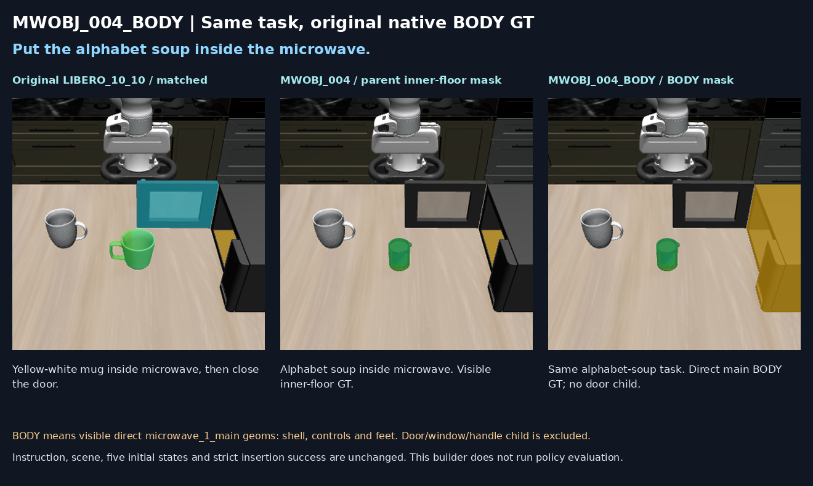

What changed?
The destination input now uses the original native microwave main BODY mask, instead of an interior-floor-only mask. Visible shell, controls and feet belonging directly to the main body are included; the separate articulated door, window and handle are excluded. Both the grasp-stage future-placement mask and the release-stage destination mask use this binding.
This is placement only: closing the microwave door is not part of the task. Scene, five initial states, instruction, action plan, frozen RAIN checkpoints and success rule are unchanged from parent MWOBJ_004.
Parent floor mask: 1/5 (20%), ep001. New BODY mask: 1/5 (20%), ep000. Same five seeds (307–311), same GPU 7. The aggregate success rate is unchanged; this small comparison does not establish an improvement.
Success rule and evaluation checks
Native In, full object collision-envelope containment within the physical microwave cavity, positive support from the exact original cavity floor, and no gripper contact must hold for five consecutive control steps. Native region entry or predicted task completion alone is insufficient. All five original videos, physical outcome checks and actual BODY-mask inputs were audited. Maximum 520 control steps; no success-based retries.
Original → previous mask → evaluated BODY mask

Green: manipulated object. Amber: placement destination. Cyan in the original full task: door interaction. The new task does not include door closing. Click the image for full resolution.
All five original episodes
Showing all 5 episodes (1 success, 4 failures)
| Episode | Seed | Outcome | Video |
|---|---|---|---|
| ep000 | 307 | Success | · Original MP4 |
| ep001 | 308 | Failure | · Original MP4 |
| ep002 | 309 | Failure | · Original MP4 |
| ep003 | 310 | Failure | · Original MP4 |
| ep004 | 311 | Failure | · Original MP4 |
No videos load on page open. One shared player loads only the current episode; sequential playback starts with one click. Clips are the unchanged original trial recordings.
Download records
Task / success-rate table (TSV) · Public evaluation summary and video hashes (JSON)
This result page does not change the Selected Tasks collection.